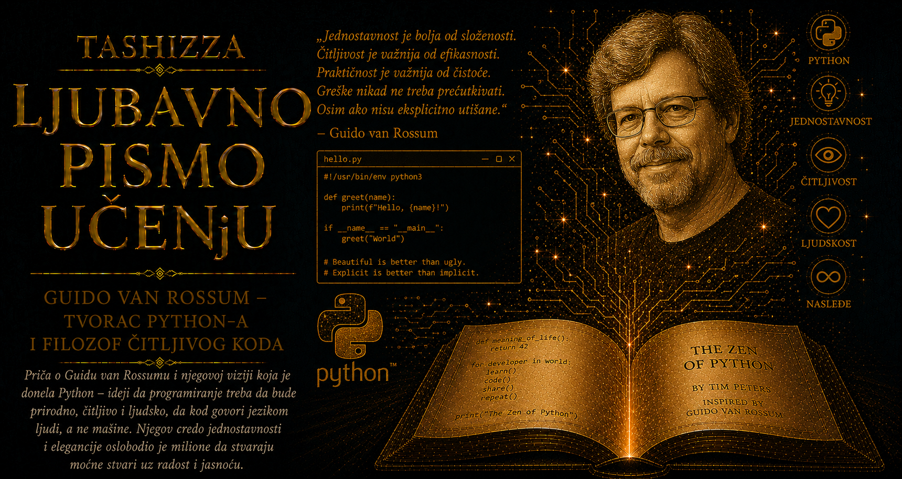

Ljubavno pismo učenju

Tokom božićnih praznika 1989. godine hodnici holandskog Centra za matematiku i računarstvo bili su gotovo prazni. Guido van Rossum imao je slobodno vreme, iskustvo stečeno u razvoju programskih jezika i želju da započne projekat koji će ga dovoljno zainteresovati da mu ispuni mirne praznične dane. Seo je za računar i počeo da piše interpreter za novi jezik. Nije imao kompaniju, marketinški plan, fondaciju ni predstavu o milionima budućih korisnika. Imao je nekoliko jasnih zamisli o tome šta programerima nedostaje i dovoljno strpljenja da ih pretvori u alat koji je i sam želeo da koristi.
U toj skromnoj početnoj slici ima nečega duboko saglasnog sa Van Rossumovom ličnošću. Njegov rad nije pratio predstavu o usamljenom geniju koji u jednom bljesku unapred vidi čitavu budućnost. Python je rastao iz pažljivog posmatranja stvarnih teškoća, iz iskustva prethodnih projekata i iz spremnosti da se dobra ideja proverava u svakodnevnom radu. Van Rossum je umeo da uoči mesto na kojem se sistem nepotrebno opire korisniku i da zatim dugo razmišlja kako taj otpor može da se smanji bez gubitka pouzdanosti i izražajne snage.
Rođen je 31. januara 1956. godine u Hagu, u Holandiji koja je tokom njegovog odrastanja širila obrazovanje, obnavljala ustanove i razvijala snažnu istraživačku kulturu. Računari još nisu bili deo svakodnevnog života niti predmeti koje bi dete moglo da istražuje kod kuće. Bili su velike, skupe mašine smeštene u posebnim prostorijama, dostupne uglavnom državnim ustanovama, univerzitetima i velikim kompanijama. Van Rossum je zato do programiranja stigao postepeno, kroz obrazovanje, u vremenu kada je svaki susret sa računarom podrazumevao dragoceno vreme i pažljivo pripremljen pokušaj.
Studirao je matematiku na Univerzitetu u Amsterdamu, gde ga je privlačila sposobnost matematičkog jezika da složene odnose izrazi kroz jasne strukture. Programiranje mu je otvorilo dodatnu dimenziju: apstraktna zamisao mogla je da postane postupak koji mašina izvršava, proverava i ponavlja. U tom susretu matematičke urednosti sa praktičnim zanatom pronašao je oblast u kojoj će ostati čitavog života. Diplomirao je 1982. godine i zaposlio se u Centru za matematiku i računarstvo, ustanovi poznatoj po istraživanjima programskih jezika, algoritama, mreža i ranog interneta.
U CWI-ju se pridružio timu koji je razvijao ABC, jezik namenjen ljudima bez prethodnog programerskog iskustva. Njegovi glavni tvorci, među kojima su bili Lambert Meertens i Leo Geurts, pokušavali su da programiranje oslobode nepotrebnog tehničkog tereta. ABC je imao veoma čitljivu sintaksu, ugrađene složene tipove podataka i uvlačenje redova koje je pokazivalo strukturu programa. Van Rossum je u tom timu naučio koliko mnogo nevidljivog rada stoji iza alata koji korisniku deluje prirodno. Jednostavnost na korisničkoj strani često je plod dugog promišljanja, odbacivanja suvišnih mogućnosti i pažljivog usklađivanja velikog broja pojedinosti.
ABC je posedovao eleganciju, ali se teško uklapao u postojeći softverski svet. Korisnicima je nudio uređeno okruženje, dok su stvarni zadaci zahtevali pristup datotekama, operativnom sistemu i bibliotekama napisanim u drugim jezicima. Projekat zbog toga nije ostvario rasprostranjenost kojoj su se njegovi tvorci nadali. Van Rossum je iz tog iskustva poneo jednu od najvrednijih pouka svoje karijere: lepota dizajna dobija puni smisao tek kada alat može da živi među postojećim sistemima, nesavršenim navikama i potrebama koje njegov autor nije mogao unapred da predvidi.
Kasnije je radio na eksperimentalnom distribuiranom operativnom sistemu Amoeba. Istraživačima su bili potrebni pomoćni programi za upravljanje procesima i mrežnim okruženjem, ali nijedan raspoloživi jezik nije mu pružao željenu ravnotežu. Komandne skripte bile su brze za pisanje i skromne po mogućnostima, dok je C nudio veliku moć uz mnogo tehničkih pojedinosti. Van Rossum je počeo da zamišlja jezik koji bi spojio najbolje osobine oba sveta: neposrednost skripte, urednost obrazovnog jezika i mogućnost povezivanja sa ozbiljnim sistemskim softverom.
Kada je tokom praznika započeo novi interpreter, nije kretao od prazne stranice. Iz ABC-a je preuzeo ljubav prema čitljivosti, ugrađenim strukturama podataka i vizuelno jasnom kodu. Iz rada na Amoebi poneo je svest da jezik mora da razgovara sa datotekama, procesima, mrežama i programima napisanim u C-u. Dodao je module, funkcije, klase i izuzetke, jer je želeo da mali program može postepeno da raste bez gubitka preglednosti. Python je tako nastajao iz spoja nasleđenih ideja, praktične potrebe i ličnog programerskog ukusa.
Izbor imena pokazuje vedriju stranu njegovog karaktera. Van Rossum je voleo seriju Monty Python’s Flying Circus i tražio kratko ime koje će se razlikovati od ozbiljnih skraćenica uobičajenih u računarstvu. Python zato nije dobio ime po zmiji, iako će zmije kasnije postati neizbežan deo njegovih ilustracija i vizuelnog identiteta. U ranoj dokumentaciji često su se pojavljivale aluzije na skečeve o spamu, papagajima i drugim motivima iz serije, kao da je sam jezik želeo da poruči da ozbiljno rešavanje problema može da zadrži humor i radost igre.
Van Rossum je prve verzije stvarao uglavnom u slobodno vreme, a kolege su ubrzo počele da koriste jezik u okviru projekta Amoeba. Njihova pitanja, greške i zahtevi pomagali su mu da prepozna šta treba promeniti. U februaru 1991. objavio je verziju 0.9.0 u Usenet grupi alt.sources. Python je već imao funkcije, klase sa nasleđivanjem, module, izuzetke i osnovne tipove podataka koji će oblikovati njegov budući identitet. Objavljivanje izvornog koda omogućilo je da projekat stigne do ljudi koje Van Rossum nikada nije upoznao i da počne da se razvija kroz njihove potrebe.
Prvi korisnici nisu se ponašali kao publika okupljena oko završenog proizvoda. Slali su predloge, pronalazili propuste, pisali module i nudili zakrpe. Van Rossum je morao da nauči veoma zahtevnu veštinu vođenja otvorenog projekta: da pažljivo sluša ljude, a zatim sačuva celinu jezika čak i kada bi prihvatanje svakog pojedinačnog predloga kratkoročno zadovoljilo njegovog autora. Prevelika popustljivost pretvorila bi Python u zbirku nepovezanih mogućnosti, dok bi potpuna zatvorenost ugušila zajednicu koja mu je donosila iskustvo iz oblasti o kojima prvobitni tvorac nije mogao sve da zna.
Zbog takve uloge zajednica mu je dodelila duhoviti naslov BDFL, skraćenicu za „dobroćudnog doživotnog diktatora”. Van Rossum je imao završnu reč o pravcu jezika, ali je do nje stizao kroz čitanje rasprava, proučavanje alternativa i procenjivanje posledica koje će pojedinačna odluka imati godinama kasnije. Autor popularnog jezika mora da razmišlja i o ljudima koji tek počinju da uče i o stručnjacima koji održavaju ogromne sisteme. Svaka nova mogućnost nekome olakšava rad, a istovremeno postaje još jedna stvar koju će buduće generacije morati da razumeju i podržavaju.
Van Rossumov programerski ukus teško se može svesti na jednu formulu. Cenio je eleganciju, ali je od nje zahtevao da izdrži susret sa svakodnevnim problemima. Voleo je doslednost, uz svest da bi njeno apsolutno sprovođenje ponekad proizvelo još veću složenost. Želeo je moćan jezik, ali je zazirao od nagomilavanja deset različitih načina za obavljanje istog posla. Njegov dar nalazio se u odmeravanju: umeo je da prepozna rešenje koje možda nema savršenstvo matematičkog sistema, ali ljudima omogućava da se lakše sporazumeju kroz kod.
Važan saradnik u ranim godinama bio je Tim Peters, programer poznat po tehničkoj pronicljivosti, strpljenju i humoru. Peters je 1999. godine vrednosti Python zajednice pretočio u „Zen Pythona”, zbirku kratkih aforizama koja se i danas može prikazati naredbom import this. Tekst je prepoznao duh koji se već nalazio u Van Rossumovim odlukama: poštovanje prema lepoti, jasnoći, jednostavnosti, praktičnosti i čitljivosti. U njemu se nalazi i duhovita opaska da očigledan način možda neće odmah biti očigledan čoveku koji nije Holanđanin, prijateljsko podsećanje na Van Rossumovu ulogu merila programerske očiglednosti.
Pythonov rast postepeno je menjao i Van Rossumov život. Godine 1995. preselio se iz Holandije u Sjedinjene Američke Države i zaposlio u organizaciji Corporation for National Research Initiatives, gde je nastavio razvoj jezika i rad na distribuiranim sistemima. Python je prolazio kroz različite institucionalne sredine, pa su pitanja licenci, vlasništva i dugoročne dostupnosti postajala podjednako važna kao tehničke odluke. Otvoren projekat mogao je trajno da privuče pojedince i kompanije jedino ako su svi imali sigurnost da će kod ostati dostupan pod jasnim i pouzdanim uslovima.
Posle CNRI-ja Van Rossum je kratko radio u kompaniji BeOpen.com, a zatim se pridružio kompaniji Zope Corporation. Tokom tog razdoblja nastala je Python Software Foundation, osnovana 2001. godine da čuva prava, podržava zajednicu i obezbedi nezavisniji okvir za budućnost jezika. Osnivač je time prihvatio jednu od najvažnijih istina svakog velikog otvorenog projekta: delo postaje zaista trajno kada njegova sudbina više ne zavisi od samo jednog čoveka, jednog poslodavca ili jednog izvora finansiranja.
Van Rossum se 2005. pridružio Googleu, gde je deo radnog vremena mogao da posveti Pythonu. U velikoj tehnološkoj kompaniji susreo se sa drugačijim razmerama softvera, timovima čiji se kod meri milionima redova i sistemima koji moraju pouzdano da služe ogromnom broju korisnika. Python je već odavno prevazišao ulogu praktičnog istraživačkog jezika. Koristio se za interne alate, automatizaciju i brojne servise, pa su njegove odluke imale posledice u okruženjima daleko većim od onog u kojem je započeo.
Godine 2012. prešao je u Dropbox, kompaniju u čijoj je infrastrukturi Python imao značajnu ulogu. Tamo je radio sa programerima koji su jezik koristili u velikom proizvodnom sistemu i pomagao u unapređivanju koda, alata i načina saradnje. Njegovo prisustvo nije značilo da je svaki problem rešavao lično; vrednost je donosio i kroz razgovore, pregled dizajna i sposobnost da složeno pitanje svede na njegove suštinske posledice. Posle više od šest godina u Dropboxu povukao se u penziju 2019. godine.
Penzija nije dugo trajala. Van Rossum je 2020. objavio da se pridružuje Microsoftu, uz duhovitu napomenu da mu je penzionisanje postalo dosadno. U novom okruženju nastavio je da radi na performansama CPythona i projektima koji njegov rad prilagođavaju savremenim procesorima i velikim opterećenjima. Taj povratak lepo odgovara čoveku čija je karijera nastala iz prazničnog projekta: radoznalost i zadovoljstvo rešavanja problema ostali su jači od formalne granice između rada i penzije.
Jedan od najtežih perioda u istoriji jezika bio je prelazak sa Pythona 2 na Python 3. Van Rossum i saradnici želeli su da isprave stare nedoslednosti, posebno u radu sa tekstom i bajtovima, ali je čitav ekosistem već zavisio od postojećeg ponašanja. Tehnički opravdana promena postala je dug društveni i organizacioni poduhvat. Korisnici su odlagali migraciju, održavaoci su godinama podržavali obe grane, a rasprave su ponekad bile oštre. Iskustvo je pokazalo koliko tvorac uspešne tehnologije postaje odgovoran i prema navikama ljudi koji su na njenim ranijim odlukama izgradili svoj rad.
Posle dugih godina odlučivanja i rasprava Van Rossum se u julu 2018. povukao iz uloge BDFL-a. Neposredan povod bila je iscrpljujuća polemika o izrazima za dodelu vrednosti, ali je odluka sazrevala pod težinom odgovornosti koju je dugo nosio. Svojim povlačenjem primorao je zajednicu da izgradi način upravljanja koji više neće zavisiti od njegove završne reči. Python je zatim dobio izabrani Upravljački savet, čime je lični autoritet osnivača pretočen u stabilniju instituciju.
Ta odluka otkriva važan deo Van Rossumovog nasleđa. Mnogi tvorci teško dopuštaju da delo počne da živi izvan njihove kontrole, naročito kada su decenijama čuvali njegov smer. Van Rossum je umeo da se povuče i ostavi zajednici odgovornost da sačuva ono što su zajedno izgradili. Ostao je prisutan kao saradnik, učitelj i simbol Pythonove kulture, ali je budućnost jezika poverio procesu koji može da se menja, uči i obnavlja bez doživotnog vođe.
U javnim nastupima često je delovao mirno, neposredno i oslobođeno potrebe da od sopstvenog uspeha pravi mit. Govorio je o greškama, kompromisima i odlukama koje bi danas možda doneo drugačije. Takva otvorenost posebno je dragocena u tehnološkoj kulturi sklonoj pričama o nepogrešivim vizionarima. Pythonova istorija pokazuje da veliko delo može da nastane iz neuspelog prethodnog projekta, ograničenja radnog okruženja, predloga saradnika i višedecenijskog ispravljanja sopstvenih odluka.
Njegova obrazovna vizija prevazilazila je želju da Python postane školski predmet. Van Rossum je programiranje video kao mogući oblik savremene pismenosti, način da čovek računaru izrazi postupak, ispita podatke, automatizuje dosadan posao ili proveri ideju. Nije očekivao da svi postanu profesionalni programeri. Verovao je da mnogo više ljudi može da stekne dovoljno razumevanja da računar koristi stvaralački, umesto da ostane samo potrošač gotovih programa čiji način rada ne može da ispita.
Python je tu viziju ostvario u razmerama koje njegov autor tokom praznika 1989. nije mogao da predvidi. Njime danas prve naredbe pišu deca, studenti i odrasli koji menjaju zanimanje, dok ga istovremeno koriste istraživači, inženjeri, lekari, ekonomisti, umetnici i tvorci sistema veštačke inteligencije. Isti jezik povezuje početnički osećaj otkrića sa veoma složenim profesionalnim radom. Takva širina pokazuje koliko daleko može stići alat čiji je tvorac ozbiljno shvatio potrebe čoveka koji tek pokušava da razume.
Van Rossumova priča nosi i dragocenu pouku o učenju iz onoga što nije uspelo. Bez iskustva ABC-a Python bi verovatno imao manje osećaja za početnika i čitljivost; bez ABC-ovih ograničenja možda ne bi stekao otvorenost prema postojećem svetu. Bez rada na Amoebi ne bi postojala ista praktična potreba za jezikom koji povezuje sisteme. Svaki prethodni projekat ostavio je trag, uključujući i one koji nisu postali široko prihvaćeni. Neuspeh je sačuvao znanje koje je u novom obliku dobilo mnogo veći život.
Njegovo nasleđe pripada i ljudima koji su Python gradili zajedno sa njim. Tim Peters, Barry Warsaw i brojni drugi ključni programeri, autori biblioteka, pisci dokumentacije, organizatori konferencija, nastavnici i korisnici pretvorili su jedan interpreter u svetski ekosistem. Van Rossumova veličina ogleda se i u tome što je stvorio prostor u kojem tuđi doprinosi mogu da postanu deo zajedničkog dela. Jezik je zadržao prepoznatljiv karakter, a njegova snaga rasla je kroz znanje hiljada ljudi koje osnivač nikada nije mogao lično da upozna.
Python zbog toga predstavlja mnogo više od biografskog spomenika jednom programeru. On svedoči o stvaralaštvu koje ume da sluša, o autoritetu sposobnom da objašnjava svoje odluke i o vođstvu koje priprema zajednicu za dan kada osnivač više neće imati završnu reč. Guido van Rossum pokazao je da blagost prema početniku može da prati ozbiljnu tehničku moć, da humor može da živi uz disciplinu i da čitljivost može postati jedan od temelja digitalne civilizacije.
Sve je počelo tihih prazničnih dana, bez velike objave i bez obećanja da će nastati nešto istorijsko. Čovek je želeo bolji alat, oslonio se na ono što je naučio iz ranijih pokušaja i počeo da radi. Milioni ljudi kasnije su u tom alatu pronašli svoj prvi razgovor sa računarom, sredstvo naučnog istraživanja, profesionalni jezik ili način da zamisao pretvore u delo. U toj dugoj putanji od radoznalog prazničnog projekta do zajedničkog jezika savremenog sveta nalazi se jedna od najlepših potvrda da učenje raste kroz stvaranje, deljenje i hrabrost da se složenost učini razumljivom.